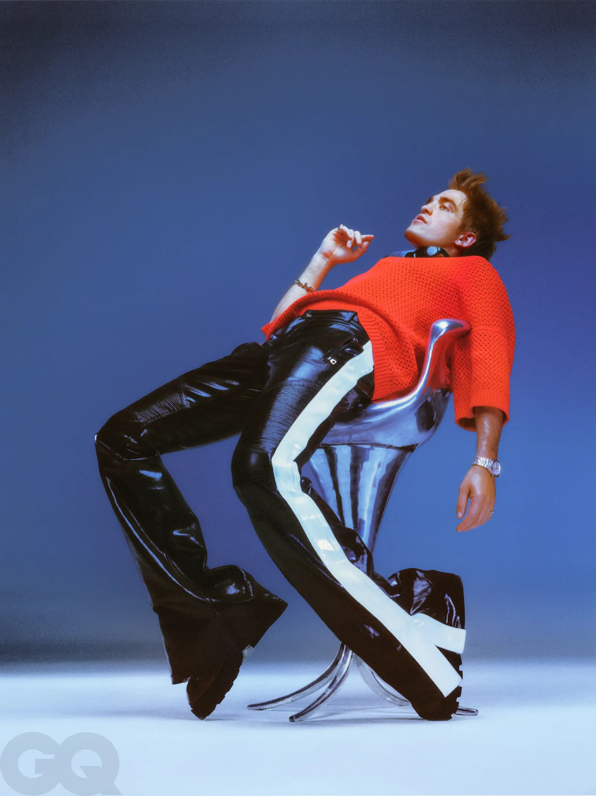
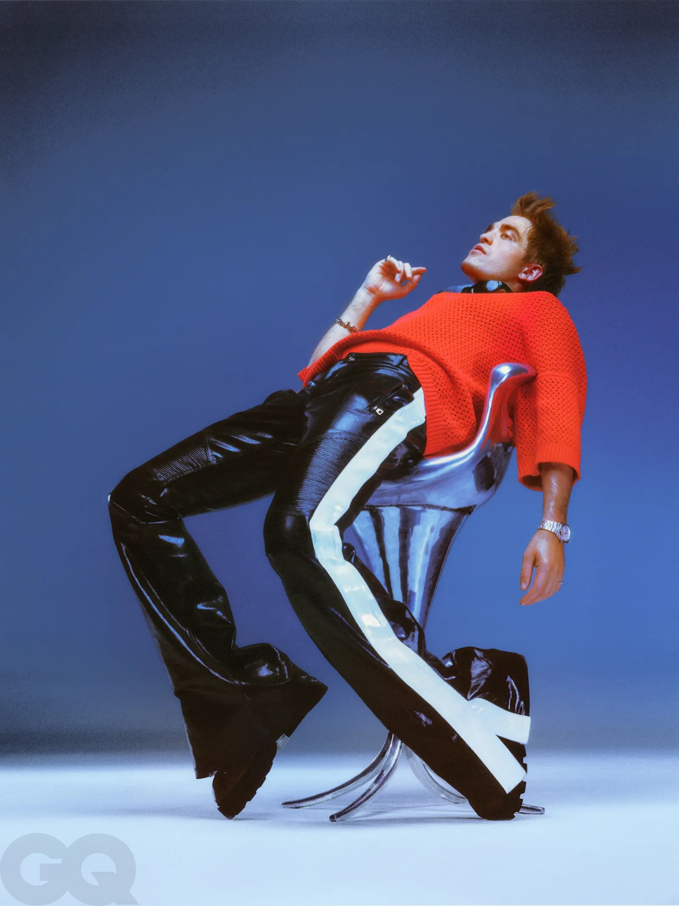
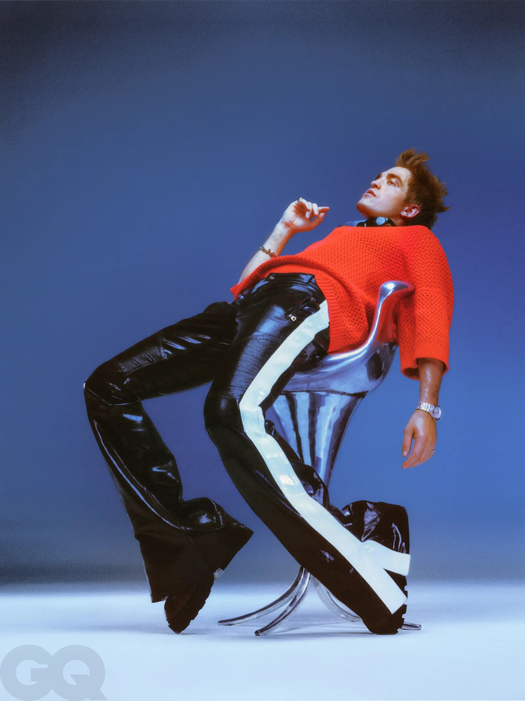

He is exceptionally handsome. Wide, wild eyes. Large facial features arranged where a sculptor might have put them in 16th-century Italy. He is, unlike some actors, taller than people suppose.

“The mask thing. The bat mask. The cowl!” Hours, days, weeks, months, in the dark, in the suit, in the cowl. “I kept calling it a mask. But I learned, no, no, it’s the cowl.”